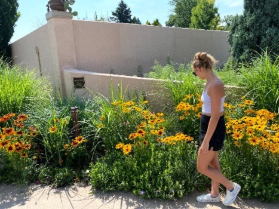

Day 1
 We left for the airport at 4:30am. We were cutting it close on making it to the airport in enough time, but we managed. We didn’t have to wait to board the plane very long. The flight was uneventful, although I had a fantastic time looking out the window. We arrived at Denver International Airport at 9am Denver time, which means we had been up for 7 hours already. . I was a bit disappointed because I didn’t realize that Denver doesn’t really have any mountains visible. You have to go a little bit more west for those. We got our luggage and our rental car, an electric, and then we went to the city. In the city, Tyler found a place with bubble tea, and he said it was the best bubble tea he ever had. We walked around for a while and then we went to our Airbnb. We were staying with 2 older women in their house. It was super cool. They had geese in the backyard. We napped for a while and then we went on a hike. The hike was pretty cool, but I honestly don’t remember the scenery because I talked the whole time. It was a long and fantastic first day.
We left for the airport at 4:30am. We were cutting it close on making it to the airport in enough time, but we managed. We didn’t have to wait to board the plane very long. The flight was uneventful, although I had a fantastic time looking out the window. We arrived at Denver International Airport at 9am Denver time, which means we had been up for 7 hours already. . I was a bit disappointed because I didn’t realize that Denver doesn’t really have any mountains visible. You have to go a little bit more west for those. We got our luggage and our rental car, an electric, and then we went to the city. In the city, Tyler found a place with bubble tea, and he said it was the best bubble tea he ever had. We walked around for a while and then we went to our Airbnb. We were staying with 2 older women in their house. It was super cool. They had geese in the backyard. We napped for a while and then we went on a hike. The hike was pretty cool, but I honestly don’t remember the scenery because I talked the whole time. It was a long and fantastic first day.
Day 2
We woke early because today was the day we were going to my first national park ever, Rocky Mountain National Park. We first went to the supermarket to get snacks for our hiking adventures. Then, we at breakfast at Bluebird Café. It was the best and such a cute little place. Then we began our trek to the park. It was about 1 hour and 45 minutes away. Getting closer to the park, we lost service and we started to notice that our “energy tank” in the car was getting a bit low. With nothing in sight and no service to look anything up, we started to freak out. This is where the day goes a bit crazy. We stopped at a cabin like building and asked them if we could plug our car in to get a little bit of charge to make it to a charge station. We still had no idea where the closest one was. We plugged in and then went hiking through the woods for about an hour, trying to make the best of it. We get back to the car and realize that it wasn’t charging at all. We decide to chance it and go to an art studio which may have an official charging station. We make it there and find out that the charging station is broken. We plug in at this building and it actually is charging this time. We explore the art gallery (which was absolutely beautiful) and buy 2 t-shirts. We contemplate calling and getting the car towed to the nearest charging station, which we learned in 20 minutes in Estes Park. We go on another random hike, which was also beautiful. I surprisingly was not freaking out. I was still thrilled to be in Colorado. After a few hours, we had 10% charge on the car and decided to make a break for it to Estes Park. Here’s the kicker. After a short uphill stretch, it was entirely downhill. The electric car was essentially charging itself on the downhills. This means that we probably could have made it there in the first place, but we couldn’t have known and we didn’t have service. At this point, it was around 3pm and it wasn’t worth it to go to the national park. We decided to explore Estes Park. We walked around cute shops and also ate the most delicious pineapple and ham calzone ever. It was quite an eventful day.
Today, we actually got to the go to the national park. We first drove to Estes to fill up our tank and then we went to a thrift store because we needed a sweatshirt. Then, we went to the park. It was more wonderful than I could have ever imagined. They had a shuttle bus system within the park, so we luckily found a party spot and hopped on the shuttle. First, we hit up bear lake. A one-mile loop around a beautiful lake. The squirrels were very friendly. Then, we went on a hike to Emerald Lake. It was 2 miles out and 2 miles back. A pretty short hike, but I had to stop at every single outlook possible, it felt like forever getting to the lake. I was skeptical of how beautiful it could be. I immediately regretted doubting it. It’s one of the most beautiful places I’ve been. We also got some really cool pictures. We hiked back down, and I had to pee really bad. I used the bathroom in the woods my first time ever. No way I would have made it two miles back. Next, we went to another lake. On this hike, about 5 minutes in, the mosquitoes were absolutely tearing up Tyler. We thought it might get better, but we were forced to turn around and run the rest of the way back, while I swatted them off his back. I had my heart set on driving to the highest point in the park. It was getting late, and we were tired, but Tyler is a trooper and told me to do whatever it was I wanted to do. We drove up this one-way road skinny switchbacks, all the way up the mountain. It was freaky, but so cool. We stopped at all the overlooks and saw a marmot and a moose (I think). We passed something called rainbow hill and as we rounded the turn we saw an actual rainbow! It was really exciting. We made it to the top and saw this random path up to the top of a mountain. At this point, it was getting pretty cold. The mountain didn’t seem that tall, but it was quite a difficult climb. The views were decent from the top, the thrill of being spontaneous and climbing it was better though. Then, we made the car drive back. It was long and we were hungry because we did not pack enough snacks. This night we ate at a random burger joint. It was delicious.
Day four was tasked with climbing manitou incline. My main reason for the trip. It’s a mountain with 2200 or so steps all the way to the top. We drive to Colorado Springs and began. At first it seemed easy as 400 steps flew by. But then it became extremely steep. We ended up having to do like 15 steps and then take a break. It took about an hour and a half to the top. The view was interesting, but the experience was better. A squirrel sat on Tyler’s lap at the top. Then, we walked Colorado Springs a bit. I wish we had more time there. We then went to the Garden of the Gods. It was extremely hot and we were tired so we didn’t stay long. I’m pretty sure we ate Chipotle that night. I know, basic, but I had actually never had it. It was pretty good, but too spicy for me.

Our final day. We ran around Denver this day until our flight. We went to the Botanical Gardens and once again it was SO HOT. I really couldn’t handle it. We speed walked through the gardens. Then, we went to an indoor photo thing. That was really cool. We should have brought the tripod in, but we didn’t so it is only pictures of me. We had to charge the car before we returned it and we were cutting it close. We walked around Walmart for an hour and then BOOKED it to the airport. We had just enough time to spare, luckily. There was almost a fist fight on the plane. We landed at midnight and had a 2.5 hour drive home. We had to play games and talk because we were both falling asleep. We got home at 4 am. It was the best trip of my life.